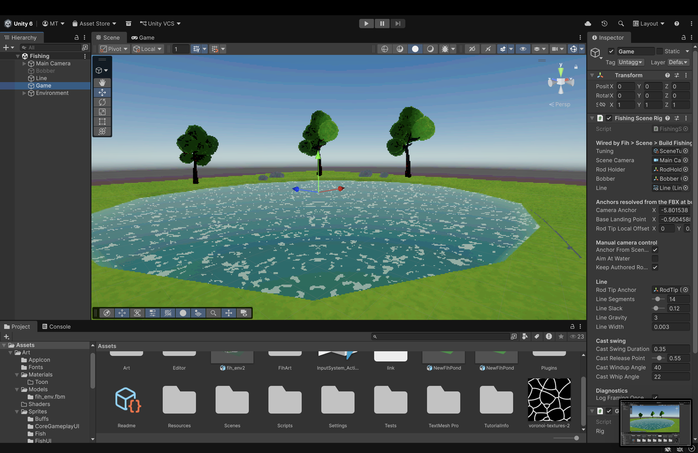

Fih Together
A multiplayer fishing game where your phone is the rod. You cast with a real swing and feel the bite through haptics.
- Role
- Game design, 3D environment, technical art
- Team
- Five people
- Date
- Built with
- Unity 6, C#

My part
I worked on the game design and was the 3D and technical artist. I built the 3D environment and the pixelated shaders, including the animated water.
How it plays
A match happens in a shared session called a Pond, which lasts up to 20 minutes. Players fish side by side, climb a live leaderboard and level up as they catch fish.
Each level offers a temporary buff, and buffs stack into a stronger build over the match. When the Pond closes, every build resets, so the next match starts fair. The loop is cast, catch, level up, stack, repeat.
What playtesting showed
We ran a playtest with three people. They liked the idea of fishing together, but it raised a fair question: why does the game need a shared Pond and other players at all?
Our answer was to let one player open a Pond and others join it. The more people in a Pond, the higher the group’s chance of catching better fish, so playing together pays off.
In development
